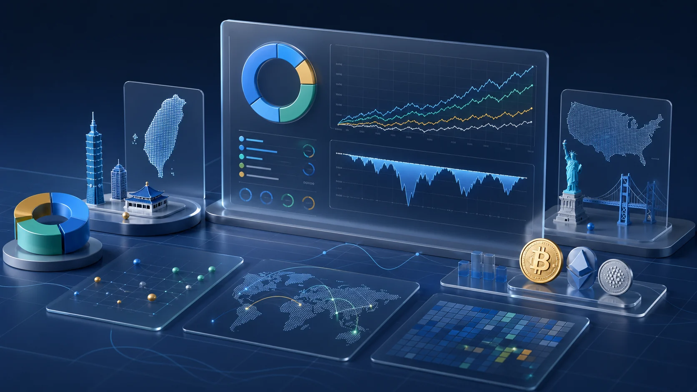
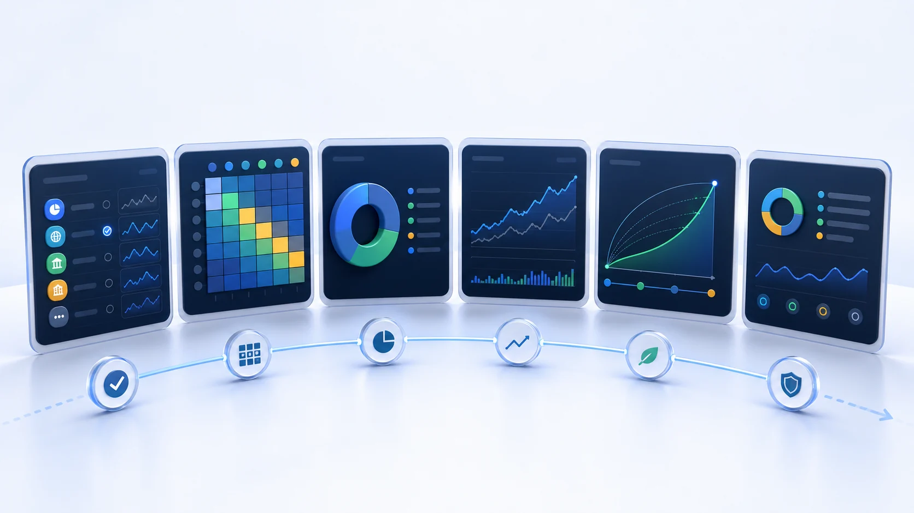
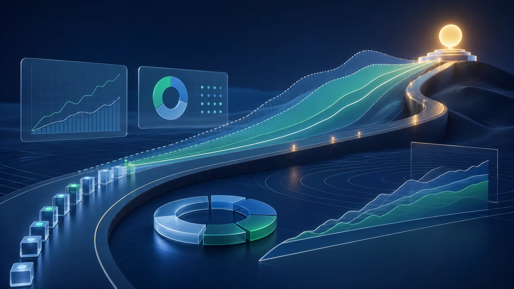

把台股 ETF、美股 ETF 與加密貨幣放在同一個 TWD 視角下，
比較報酬、風險、最大回撤、相關性與 FIRE 時間軸。
債券、黃金等配置主題會透過 ETF 類標的呈現，
讓不同曝險可以在同一套資料中被檢查。
涵蓋 37 個策展資產，資料每日更新，所有計算邏輯可追溯。
不用猜哪個組合比較好。
先用同一套歷史資料看清楚過去表現、下跌幅度與資產重疊。
再回頭調整自己的配置與 FIRE 進度。
主動選股與擇時看起來很有吸引力，但長期績效往往會受到費用、交易成本與情緒決策影響。被動投資的重點，是用低成本、分散化與長期持有，讓市場報酬有時間發揮作用。
Passive Portfolio Lab 不提供買賣建議，也不承諾未來績效。它做的事更單純：把你選的資產放進同一套歷史資料裡，讓你看見過去的報酬、風險、回撤與分散效果。
資產池不是越多越好。這裡保留具代表性、流動性足夠、資料可追溯的標的。
債券、黃金等曝險不另外拆成獨立資產類別，而是透過 ETF 類標的呈現。
涵蓋市值型、高股息、債券型、科技主題與海外市場連結型標的。適合想用台幣投資、熟悉台灣市場，或希望保留本地資產曝險的投資人。
涵蓋美國大盤、全市場、成長股、價值股、國際市場、債券型 ETF、黃金 ETF 與新興市場 ETF。適合想建立全球化配置，或比較不同市場曝險的投資人。
用於觀察高波動資產在投資組合中的歷史行為與分散效果。這類資產波動較高，適合用小比例情境來觀察對整體組合的影響。
想在桌機完整操作、使用支援手機的精美網頁版，或分享固定報表。
三個入口使用同一套資料流程，只是適合的使用情境不同。

適合在桌機上完整操作分析流程。可逐步調整資產、風險與 FIRE 參數，檢查篩選、相關性、回測與總覽摘要。
適合多數使用者日常使用。保留 Streamlit 的主要分析，介面更精美且支援手機，方便查看資產、跑回測與分享畫面。
適合查看固定情境與分享報表。用預建視圖呈現配置、報酬、回測與 FIRE 指標，方便簡報、討論或快速展示。
| 功能 | Streamlit 互動儀表板 |
GitHub Web 網頁版 |
Looker Studio 報表 |
|---|---|---|---|
| 六步驟完整分析流程 | ✓ | ✓ | 固定報表 |
| 資產篩選與排序 | ✓ | ✓ | ✓ |
| 相關性分析與配置視覺化 | ✓ | ✓ | 固定報表 |
| 歷史回測與回撤 | ✓ | ✓ | ✓ |
| FIRE 退休試算 | ✓ | ✓ | ✓ |
| AI 投資組合摘要 | ✓ | ✓ | — |
| 手機友善 | 尚可 | 最適合 | 可使用 |
| 最適情境 | 桌機完整操作 | 精美網頁與手機瀏覽 | 分享固定報告 |
本工具提供的所有資料、視覺化、回測與試算，僅供說明及教育用途，不構成任何投資建議、買賣建議或財務規劃建議。
歷史績效不代表未來結果。加密貨幣歷史較短且波動較高，請特別審慎參考。
所有金額除另有標示外，均以新台幣 TWD 計算。

從 Streamlit 互動儀表板開始，或使用更精美且支援手機的 GitHub Web 網頁版。也可以使用 Looker Studio 報表查看固定情境與分享結果。